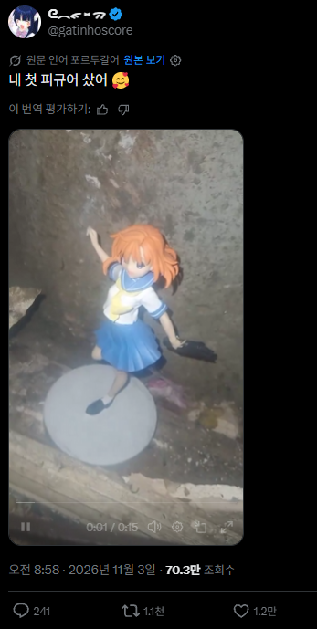

멋진 집에서 피규어 장식

멋진 집에서 피규어 장식
K짱
짠한 느낌이 드네.
포르투갈 많이 어렵구나...
포르투갈어를 쓰는 나라일수있음
그럼 포르투갈이지
포르투갈어를 공용어(또는 공식 언어)로 사용하는 국가는 총 9개국입니다. (비회원 자치령인 마카오 포함 시 10곳)
포르투갈어를 공용어로 쓰는 국가 (CPLP 회원국 9개국)
• 유럽
• 포르투갈 (포르투갈어의 본고장)
• 남아메리카
• 브라질 (전체 포르투갈어 인구의 약 80% 이상이 거주)
• 아프리카
• 앙골라
• 모잠비크
• 카보베르데
• 기니비사우
• 상투메 프린시페
• 적도 기니 (스페인어·프랑스어와 함께 공용어 지정)
• 아시아·오세아니아
• 동티모르 (테툼어와 함께 공용어 지정)
이중에 하나일듯 ㅋ
그럼 포르투갈이네


개그는
반복이다
나는 이런 미는 개그가 좋더라
How
코이츠… 마지다나?
흙타구 입장에선 진짜 행복하긴 할듯
싸패 살인귀네
배송 잘 온 것만 해도 감사할 듯
레나는 어쩔수없지..
뭐야 왜 반전이 없냐고 ㅠㅠ
좋다고 이리저리 움직여서 찍는거 귀엽다
진짜 좀 많이 슬프네
내방에서 잠자고있는 피규어 한트럭 선물해주고싶다
그것보다 주변환경이 암울해
환경은 내가 못바꿔주니까 피규어라도 배터지게 먹여주고싶음
진짜 행복해보임
영상 나오길래 뭐 걸쭉한 거 뿌려지나 했네
레나라서 오히려 배경이 음산하니 어울리네

뭐야 분위기 맞춰서 디스플레이한거 아니였음?
위치를 보니 몰래 숨긴 장소 같은데
도끼식칼 들면 배경이랑 잘어울릴것같은데
브라질인이네
치통으로 고생 중이라는데 치과 가보겠다는 말이 없네..
ㅠㅠ
뭘 뿌릴거같은배경이군
치마안에 뭐냐..거미줄 친거냐?
원작 고증이네 쟤는 저런꼬라지 방에서 칼들고 나오는게 맞긴해
우소우소다
우소다